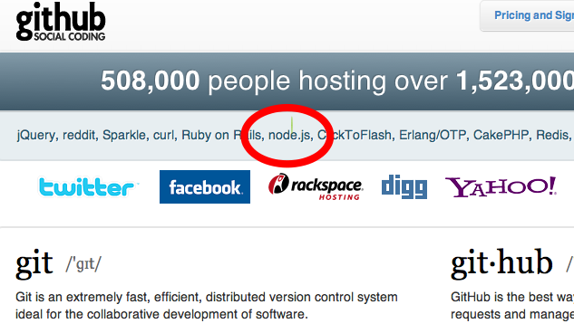

Loading...
This presentation is an HTML5 website
Press → key to advance.
Having issues seeing the presentation? Read the disclaimer
Slides controls, press:
- ← and → to move around.
- Ctrl/Command and + or - to zoom in and out if slides don’t fit.
- T to change the theme.
- H to toggle syntax highlight.
Node.js Rocks!
Masahiro Hayashi
Me
- Masahiro Hayashi
- @masahiroh
- Node.js 日本ユーザグループ (nodejs.jp)
-

Node.js 本をみんなで書いています
-
執筆陣
-
-
監修
-


今日の内容
- Node.jsの楽しさを伝えるためにきました。
- デモ多めです。
- アーキテクチャの話はあまり出てきません:D
Node.js Rocks!
=
Node ⊿
Github のトップページにも載りました！

Node ⊿ その１
Websocket
WebのUXが
変わる！
Node.js Knockout (8/28, 29)
-

- 48時間耐久ハッカソン&コンペ
- リアルタイムのWebアプリが目白押し
- が、ホスト先のJoyentがサーバをとめたので、動いているアプリはほとんどありませんorz
とはいえ
- Node.jsの魅力としてぜひ知ってもらいたいので、あちこち探してあつめてきたリアルタイムWebアプリを紹介します
Hummingbird
- Websocket + ログ
- リアルタイムのアクセス解析ログの表示ツール
- Demo
Serrano
- Websocket + マウス操作
- DOM操作をモニタリング
- DOM操作を別の相手に飛ばすことができる
- Screen cast
Swarmation
- Websocket + Game
- プレーヤ同士で協力して図形をつくる
- Demo
WebGL Aquarium
- WebGL + Websocket
- Video
Websocket⊿
しかもわりと簡単
- モジュール(Socket.IO)の出来がよい
socket = new io.Socket('localhost'); socket.connect(); socket.on('connect', function(){ // connected }); socket.on('message', function(data){ // data here }); socket.send('some data');
なんでJSで
こんなことが？
アーキテクチャの話(ちょっとだけ)
- イベントドリブン + ノンブロッキング
- イベントループがぐるぐるまわってる
- ファイルアクセスとかネットワークとか重い処理は非同期で実行
I/O
-
L1 3 cycle Non-Blocking L2 14 cycle RAM 250 cycle DISK 41,000,000 cycle Blocking NETWORK 240,000,000 cycle
要するに
ブロッキング
- こうじゃなくて・・
result = query('select..'); // ↑これが終わるまで待つ // 結果を使う next(result);
ノンブロッキング
- こう
query('select..', function(result) { // 結果をつかう next(result); }); // query の結果を待たずに次に進む next(result);
普通のJavascript
Javascriptが選ばれた理由
- イベントドリブン
- 非常に速いエンジン(V8)があった
- みんな知ってる言語なので親しみやすい
他にもこんなことができる
Transloadit
-
リアルタイムエンコーディング
- FFmpeg binding
- Link
Htracr
-
パケットスニファリング
- pcap binding
-

- Link
C/C++バインディング
- どちらも外部のCのプログラムを使用
- 負荷がかかる処理は裏でC/C++のプログラムに任せてしまう
- 実行結果をもらうようにできる
Node ⊿ その２
シンプル(色々と)
API設計がシンプル
- とにかくコールバックを渡す
- 引数の内容もだいたい同じ
HTTPサーバ
var http = require('http'); http.createServer(function(req, res) { res.writeHead(200, {'Content-Type': 'text/plain'}); res.end('Hello World\n'); }).listen(8124, "127.0.0.1");
Websocket
socket = new io.Socket('localhost'); socket.connect(); socket.on('connect', function(){ // connected }); socket.on('message', function(data){ // data here }); socket.send('some data');
on = jQuery でいうところの bind
DBアクセス
var cradle = require('cradle'); var db = new( cradle.Connection )().database('starwars'); db.get('vador', function(err, doc) { doc.name; // 'Darth Vador' assert.equal(doc.force, 'dark'); });
cradle + CouchDB
徹底した
コールバック
っぷり
deferredとかpromiseとかも使えます
さっきの話で・・
- イベントドリブン
- V8がめちゃくちゃ速い
- みんな知ってる言語なので親しみやすい
全部Javascriptでいいじゃない
- フロントエンドは当然Javascript
-
いまやバックエンドもJavascript
- 当然、やりとりするデータはJSON
-
だったらDBもJSONで
- MongoDB, CouchDB, Redis, etc…
つまり、開発環境がシンプル
- 開発言語がJavascriptのみ
コーディングも楽
-
文法の違いによるストレス
- == の仕様は？、とか
- {} [] () いるんだっけ？、とか
- ; は？、とか
- とか、とか、とか、とか、とか
- から解放される
- 頭の中がシンプル
さらにシンプルに - dnode
-
RMI(Remote Method Invocation)
- サーバ
var dnode = require('dnode'); dnode({ decify : function (n,f) { f(n * 10) } }).listen(6060);
さらにシンプルに - dnode
- クライアント
var dnode = require('dnode'); dnode.connect(6060, function (remote) { remote.decify(5, function (n) { console.log(n); // prints 50, woo! }); });
- 裏ではWebsocketでやりとり
PROS or CONS ?
- 全部JSで書けるということの効果は、思った以上にじわじわ効いてくる
- 他の言語に戻りたくなくなる・・
- むしろ、なんでこんなことが今までできなかったんだよ、とすら思えてくる・・
触ってみたくなってきましたか？
Node.jsの歩き方
コミュニティ
コミュニティの規模
-
Google groups members nodejs > 3000 nodejs-dev > 300 nodejs-jp > 250 щ(ﾟдﾟщ)ｶﾓｰﾝ - だいたい一日に50-60通くらいメールが飛んでくる
コミュニティの人たち
- 作者(@ryah) = シャイで、いい人
-
とても活発
- 全体が若い感じ
- 楽しんでモジュールを作ってる感満載
- 同時多発的に開発が始まるので、かぶることもよくある:D
情報を探す場所
-
IRC: freenode #node.js
- ここでの新機能の提案がされたり、相談にのったりする
-
メーリングリスト
- 正式に議論をする場所
-
Github の Issue
- モジュールがうまく動かないときにここを見ると解決することが多い
情報を探す場所
開発環境
開発環境
- インストールは簡単
- Nodeとnpmの2つだけ
開発環境
- ソースをダウンロードして解凍 Link
- ビルド
cd node-v0.3.2 ./configure make make install
開発環境
-
npm
- Node Package Manager
curl http://npmjs.org/install.sh | sh
開発環境
-
バージョン番号
-
0.3.x <- 2桁めが奇数 = 開発版
- 新機能がばんばん追加される
-
メーリングリストを見ていれば、何が進行中かわかる
- いまは https 実装中
- 0.2.x <- 2桁めが偶数 = 安定版
-
0.3.x <- 2桁めが奇数 = 開発版
*
モジュール
モジュール - 選び方
- GithubのWikiから探す
-
個人的な基準
- 最終更新が2ヶ月以内
- watchが3桁いってる
モジュール - 楽しみ方
-
バラエティに富んでいる
- websocket, http proxy, network sniffer, web framework, etc
-
コードを読んでみる
- サイズの小さい単機能のものがほとんど
- つくって公開する = npm へのパブリッシュも簡単
モジュール - DB
-
DB
- MySQL: node-mysql
- MongoDB: mongoose
- CouchDB: cradle
- Redis: node_redis
モジュール - Debug
-
Debug
-
Node Inspector
- Chrome の Web Inspector を使ってサーバサイドのデバッグができる
-
Node Inspector
ドキュメント
日本語のドキュメント
-
公式ドキュメント
- 全部翻訳済みです (ほとんど by @koichik)
-
チュートリアル
- nodejs.jp にリンクがあります by @meso, @yssk22
これで明日から始められますね！
まとめ
Node.jsの魅力
-
いろいろ簡単
- Javascriptで書ける
- 簡単にパフォーマンスのいいアプリを書ける
- GitHubでコードを共有できる
いま始めるのを進める理由
-
とにかく楽しい
- Websocket
- モジュールに刺激を受ける
-
いままさに成長中
- 刻々と状況が変わる過程を目撃できる
- 日本のコミュニティは始まって間もないので、アーリーアダプターぶれる:)
大事なこと
- なんか今までと違うwktk感
- 新しいことにチャレンジしたくなる魅力
ご要望
- nodejs.jp にどうぞ！
?
謝辞
- このスライドは org-html5presentation.el で作成しました。